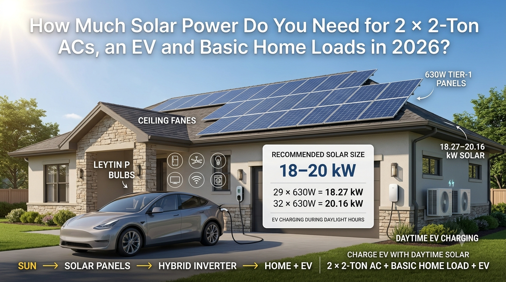
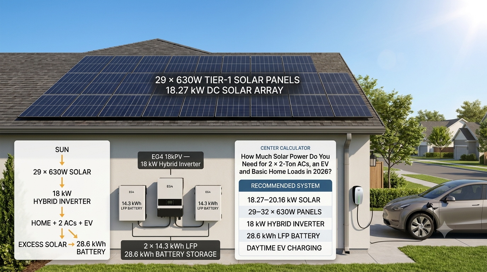

SolarRateHub
SolarRateHubUSA SOLAR GUIDE · August 31, 2026
How Much Solar Power Do You Need for 2 × 2-Ton ACs, an EV and Basic Home Loads in 2026?
If you want to run two 2-ton inverter air conditioners, normal household appliances and charge an electric vehicle during the day, a basic 10 or 12 kW solar array may not provide enough headroom. The better approach is to size the solar array, inverter and battery around the loads you actually expect to use at the same time.

Recommended 630W Panel Configuration
| Panels | DC Solar Capacity | Planning Use |
|---|---|---|
| 19 × 630W | 11.97 kW | 12 kW-class system; two ACs plus home loads, but limited EV charging headroom |
| 24 × 630W | 15.12 kW | Two ACs and home loads with some daytime EV charging |
| 29 × 630W | 18.27 kW | Recommended lower planning range |
| 32 × 630W | 20.16 kW | More headroom for EV and household loads |
| 40 × 630W | 25.20 kW | Very high consumption or frequent EV charging |
What Loads Are We Designing For?
This example assumes two 2-ton inverter ACs plus a normal U.S. household load. Inverter ACs modulate their power draw, so their instantaneous consumption can be much lower or higher than a simple nameplate assumption.
| Load | Illustrative Running Range |
|---|---|
| 2 × 2-ton inverter ACs | ~2.0–3.8 kW combined at a given operating point |
| Refrigerator | ~0.15–0.30 kW while running |
| 6–8 ceiling fans | ~0.35–0.60 kW |
| LED lighting | ~0.10–0.20 kW |
| TV + Wi-Fi + electronics | ~0.15–0.30 kW |
| Washing machine / miscellaneous | ~0.30–1.00 kW when operating |
A reasonable simultaneous household example before EV charging is therefore roughly 3–6 kW, depending on the ACs and appliances.
How Much Power Does a Home EV Charger Use?
A U.S. Level 2 home EV charger is commonly in the roughly 6–8 kW class, although equipment can be configured differently. The U.S. Department of Energy lists 240V Level 2 examples up to 7.20 kW at 30A and 7.68 kW at higher permitted current, while other Level 2 installations use around 6.7 kW.
For our planning example, we will use approximately 7.2 kW of daytime EV charging. That does not mean every EV or charger draws 7.2 kW continuously; the vehicle's onboard charger, state of charge and charging settings determine the actual power. U.S. Department of Energy EV charger power standards

Why 18–20 kW Solar Makes Sense
If both ACs and the EV charger are operating at the same time, a simple illustrative peak calculation could look like this:
| Load | Example Power |
|---|---|
| Two 2-ton inverter ACs | ~3.0 kW |
| Basic home load | ~1.0 kW |
| Level 2 EV charging | ~7.2 kW |
| Illustrative simultaneous load | ~11.2 kW |
This is an example rather than a guaranteed maximum. If the AC compressors ramp up, an appliance starts, or the EV charger is set higher, the instantaneous load can rise.
An 18–20 kW DC solar array gives the system considerably more generation capacity than that illustrative 11.2 kW load, allowing for normal solar losses and the fact that panel output changes throughout the day.
Recommended Inverter
For this high-load configuration, an 18 kW-class hybrid inverter is a sensible baseline. In the SolarRateHub example, we use the EG4 18kPV as the reference inverter class.
The important point is not simply the brand. The inverter must have enough continuous AC output, appropriate PV input capacity, suitable MPPT voltage/current ranges, battery compatibility and certification for the local electrical system.
Because the solar array is 18.27–20.16 kW DC, the final design must also confirm that the selected inverter can accept the proposed PV array without exceeding its input limits.
Recommended Battery
For this type of home, I would not use only a small 10–16 kWh battery if the goal is meaningful evening backup after two ACs and normal household loads. A more useful premium reference configuration is:
2 × EG4 PowerPro 14.3 kWh LFP batteries = 28.6 kWh total nominal storage.
The battery is primarily for energy shifting, evening loads and backup. It is not the same thing as a 28.6 kW power source. The inverter and battery continuous-discharge ratings determine how much load can actually run simultaneously.
Why Charge the EV During the Day?
Daytime EV charging is one of the best ways to use a larger solar array directly. Instead of generating solar power, storing it in the battery, and later using the battery to charge the car, the system can route available solar generation directly to the home and EV.
The preferred energy flow is:
Solar panels → Hybrid inverter → Home loads + ACs + EV charger → Excess solar → Battery
This strategy can reduce unnecessary battery cycling and can make better use of solar production when the vehicle is parked at home during the day.
The U.S. Department of Energy notes that Level 1 and Level 2 charging are expected to account for most EV charging activity, with a large share occurring at single-family homes. DOE EVGrid Assist charging data
18.27 kW vs. 20.16 kW: Which Should You Choose?
| System | Configuration | Best For |
|---|---|---|
| 18.27 kW | 29 × 630W | Strong home + two ACs + daytime EV charging |
| 20.16 kW | 32 × 630W | More production headroom, higher EV use and larger daytime loads |
If the EV is charged mostly during strong daylight hours and the home has moderate consumption, 18.27 kW can be a very practical target. If the homeowner wants more flexibility, has a larger roof and expects frequent daytime EV charging, 20.16 kW provides additional margin.
What If the EV Charges at Night?
That changes the battery requirement. Solar panels do not produce useful electricity at night, so nighttime EV charging must come from the grid or stored energy.
For example, a 7.2 kW charger operating for two hours would require about 14.4 kWh of energy before charging losses. If the homeowner also wants to run ACs and other loads from the battery during that period, substantially more storage may be needed.
Can a 12 kW System Handle Everything?
A 12 kW-class array such as 19 × 630W = 11.97 kW can support substantial household loads, but it is not the configuration I would choose as the baseline for two 2-ton ACs plus a 7.2 kW EV charger.
There may be moments when a 12 kW array produces enough power, but cloud cover, heat, panel angle, shading and system losses can reduce output. The smaller array also leaves less room for battery charging and additional daytime appliances.
Don't Forget the Balance of System
A complete installation needs much more than solar panels. A professional design should account for:
- Tier-1 630W solar modules
- Hybrid inverter
- LFP battery bank
- Roof or ground mounting structure
- 6 mm² DC solar cable where appropriate to the design
- Correctly sized AC wiring
- MC4-compatible connectors
- DC isolators
- AC isolator and main breakers
- DC and AC surge protection
- String fuses or overcurrent protection where required
- Battery protection and disconnects
- Changeover/backup switching where required
- Earthing and grounding system
- Monitoring and CT/metering equipment
- Conduit, cable management and weatherproof glands
- Labels and safety signage
- Permits, inspection and utility interconnection
- Installation, testing and commissioning
Quick 630W Solar Calculator
| 630W Panels | Solar Capacity | Use Case |
|---|---|---|
| 19 | 11.97 kW | 12 kW-class home system |
| 24 | 15.12 kW | High household load + limited EV charging |
| 29 | 18.27 kW | Recommended starting range |
| 32 | 20.16 kW | Recommended with more headroom |
| 40 | 25.20 kW | Very high consumption / frequent EV charging |
Bottom Line
For a U.S. home in 2026 with two 2-ton inverter ACs, basic household loads and daytime EV charging, a practical planning target is around 18–20 kW of solar.
Using 630W Tier-1 panels, that means approximately 29–32 panels. Pairing the array with an 18 kW-class hybrid inverter and around 28.6 kWh of LFP storage creates a strong premium reference system, provided the equipment is correctly matched and locally certified.
The final design should be based on actual appliance specifications, EV charging requirements, annual electricity consumption, solar production estimates and the home's electrical service. A solar installer should verify the final inverter, wiring, protection, battery and utility requirements before installation.
Related SolarRateHub Guides
Solar Panel Prices · Solar Inverter Rates · Solar System Prices · 630W Solar Panel Calculator + 2-Ton AC
Disclaimer
All load figures are illustrative planning estimates, not guarantees. Actual AC consumption, EV charging power, solar production, inverter output, battery runtime and required system size vary by equipment, climate, site conditions, utility requirements and electrical design. Verify manufacturer specifications and local code before purchasing or installing a solar system.